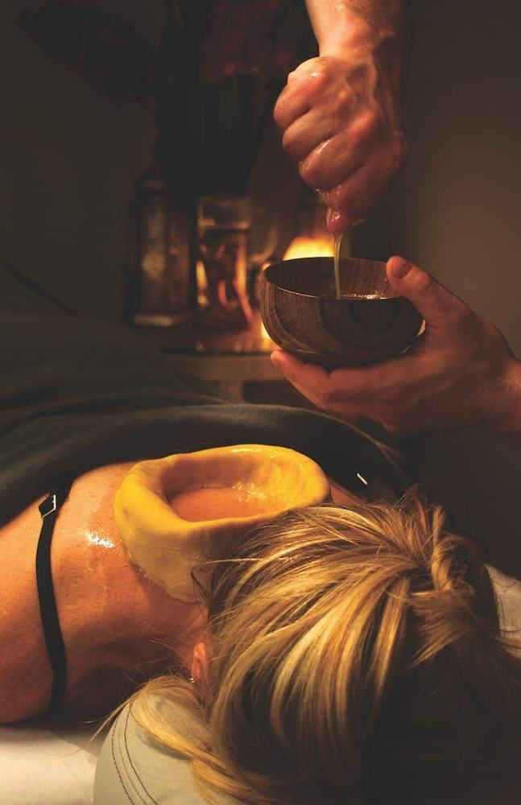
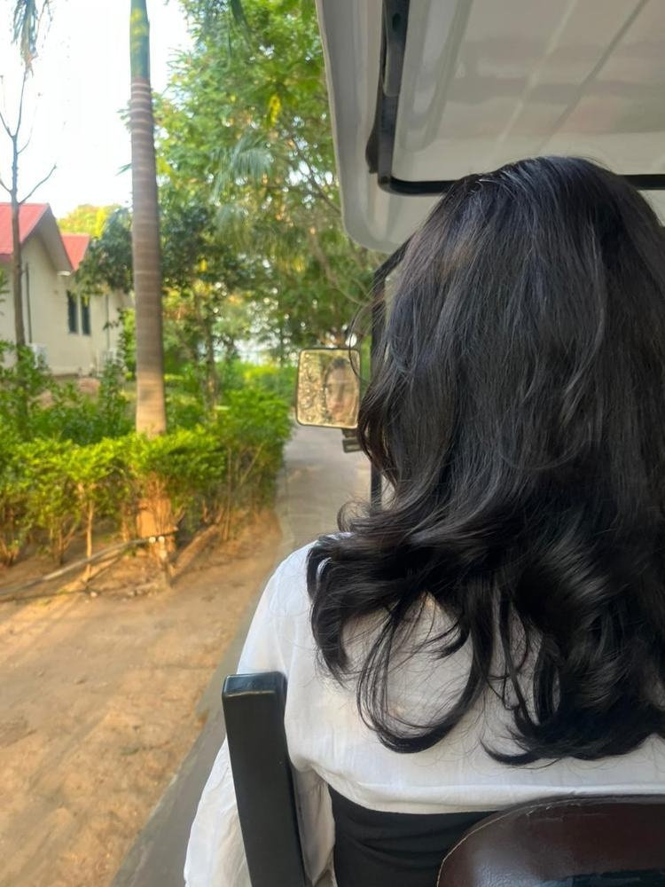
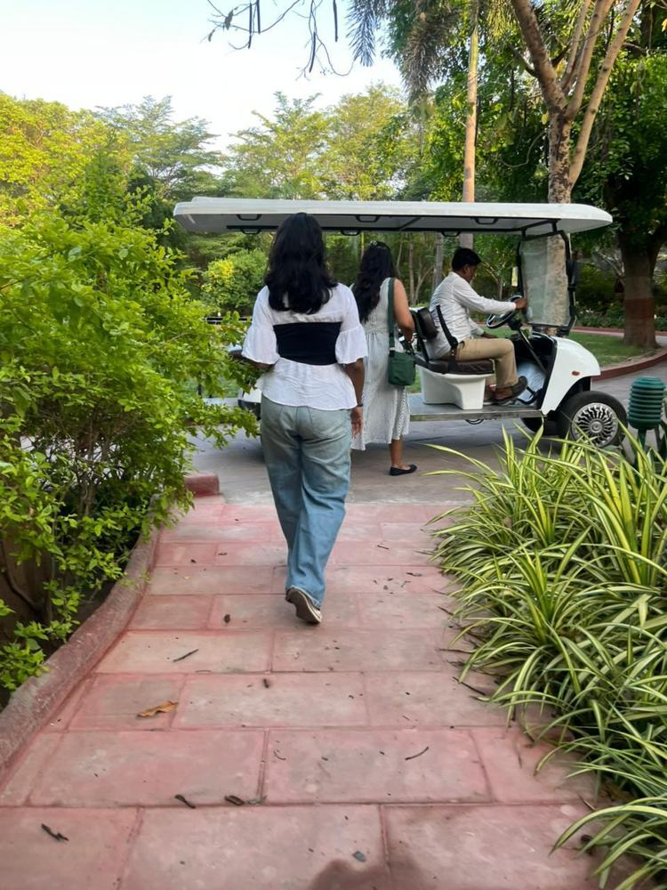
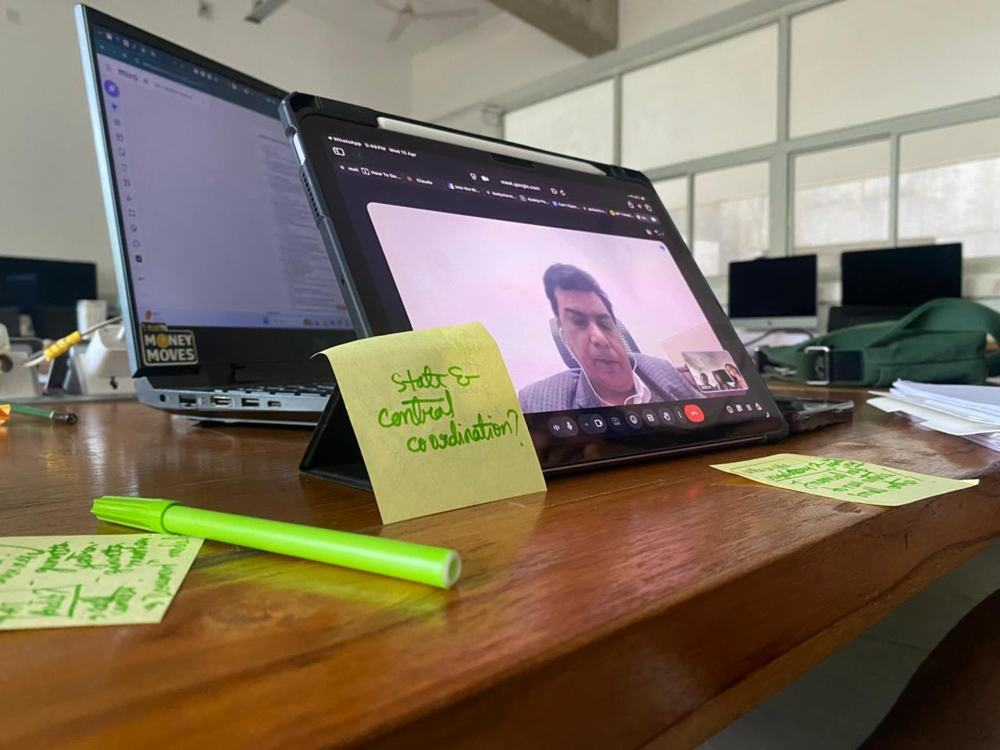
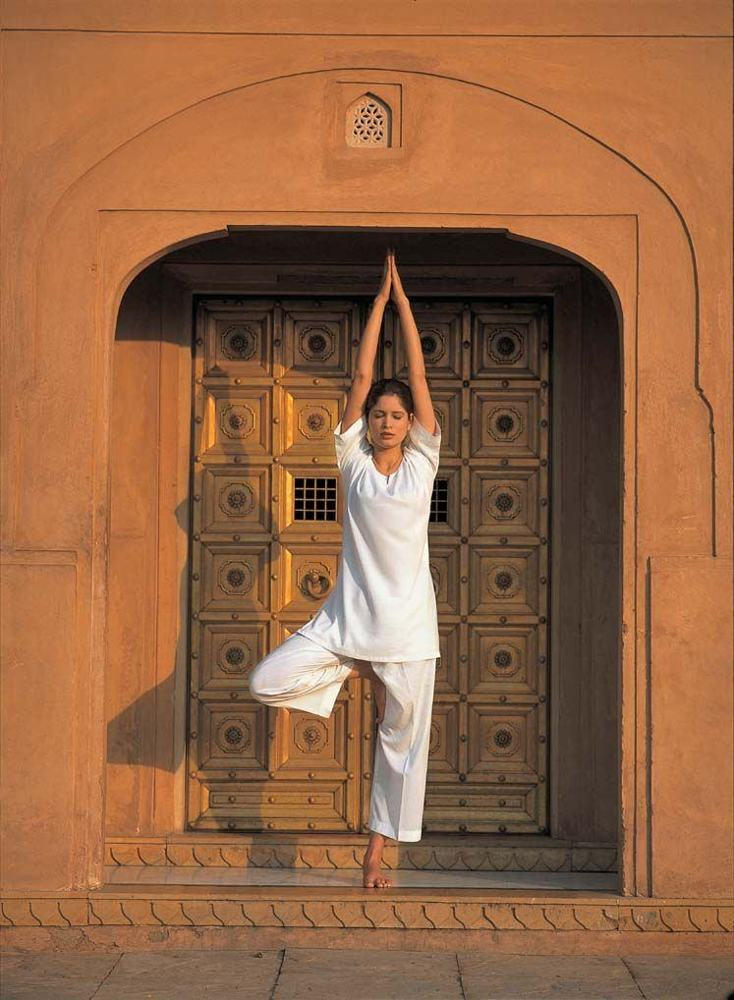
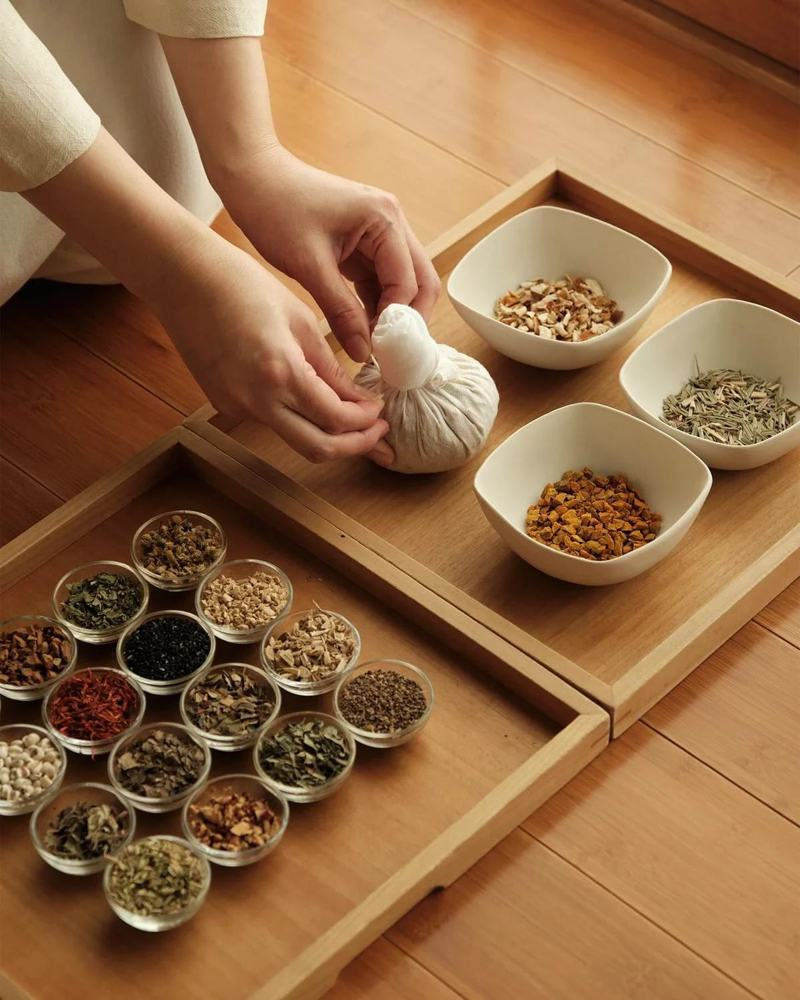
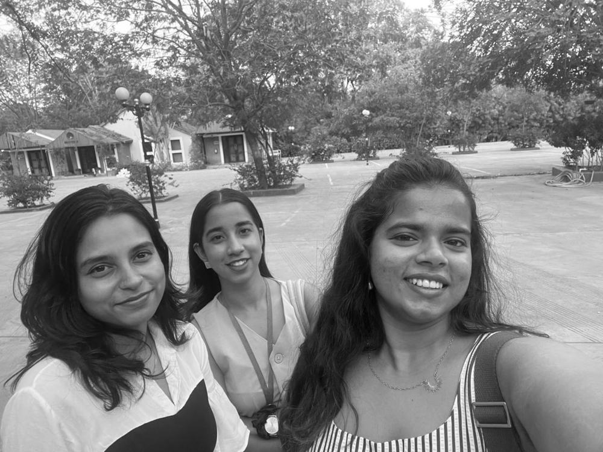

and globally, wellness tourism has already crossed $1.3 trillion.

But…
Wellness tourism in India refers to travel where the primary goal is to improve physical, mental, and spiritual well-being through indigenous practices and nature-based experiences.
International wellness travelers spend 41% to 53% more than average international tourists.
Wellness tourism in India often overlaps with:
We looked at medical tourism… and that’s where it became clear that its structured, trust-driven approach makes the journey very clear… whereas in wellness tourism in India, that customer journey is still missing.
What emerged was striking: despite having a wellness market exceeding $15 billion, India is one of the only countries in this comparison that lacks a mandatory national accreditation system, a structured pre-visit health consultation, and a unified digital health record for international users.
This reveals that while the offerings are strong, the system supporting the user journey remains fragmented, making it difficult for users to discover, trust, and confidently make decisions.
3 Government bodies
QCI, NABH, Ministry of Tourism Gujarat
12 Wellness retreat goers
Domestic, NRI
5 Domestic audience
5 International audience
5 Visiting wellness centres and spas as clients
Tattva Wellness Spa, Nirah International Spa, Nimba Wellness Centers, Lotus Wellness Spa, Spanish Spa Center
7 Wellness centers
6 Trip planners



India is frequently compared against Bali, Thailand, Sri Lanka. Red cards: international tourists. Yellow cards: within India.
Referrals bypass the research phase, so users arrive with fewer questions asked, making transparency failures more jarring when discovered on-site.
Discovery & Decision making phase
Comprehensive factor heatmap
Primary engagement metrics
Indian lifestyle hierarchy. Wellness = top layer, conditional/aspirational
The six insights were plotted by impact on tourism (low, medium, high) against feasibility (low, medium, high): 1 Ayurveda as aftercare, 2 packaged wellness vs personalised care, 3 complex and unverifiable information, 4 clinical credibility vs commercial appeal, 5 wellness as luxury, 6 lack of structured documentation.
Socio-economic factors, the natural environment and the healthcare ecosystem overlap, guided by the GWI model for a thriving economy.
GWI model for a thriving economyWay forward
A primary framework structure with five parts: intent, system of care, mode of delivery, outcome orientation, and evidence and transparency.

Plain-language explanation of every treatment.
Personalisation from a traveller’s concerns.
Evidence a traveller can compare.
Like an accreditation, visible before the visit.
Clear for international and domestic travellers.
An individual’s innate, unchanging natural constitution (genetic makeup).
The current state of imbalance or illness.
Our move: measure vikriti from the patient’s side to give outcome evidence.
A journey-based, personalised website prototype: primary concerns, preferred treatment style, intended duration, and treatment legibility through a simplified Panchakarma.

Preferred treatment style
Intended duration
Simplified Panchakarma
Typical results: improved digestion, stress reduction, visible skin clarity. Consult an expert or view packages.
